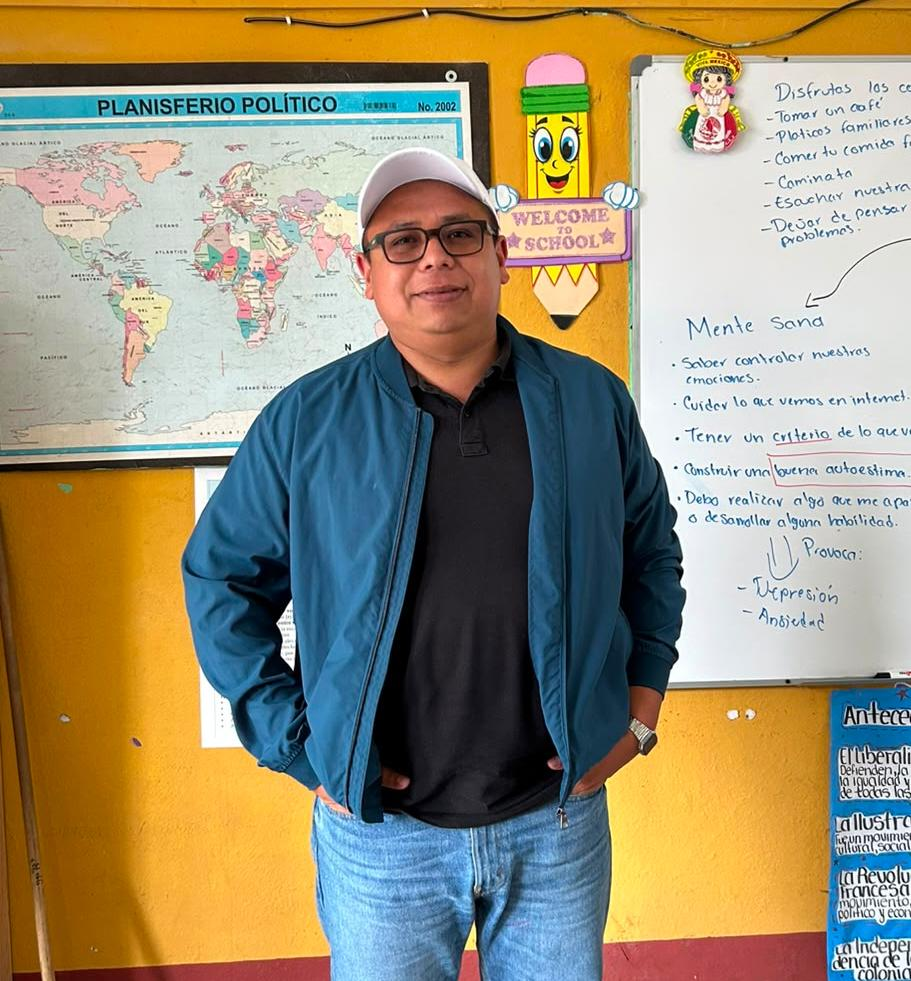
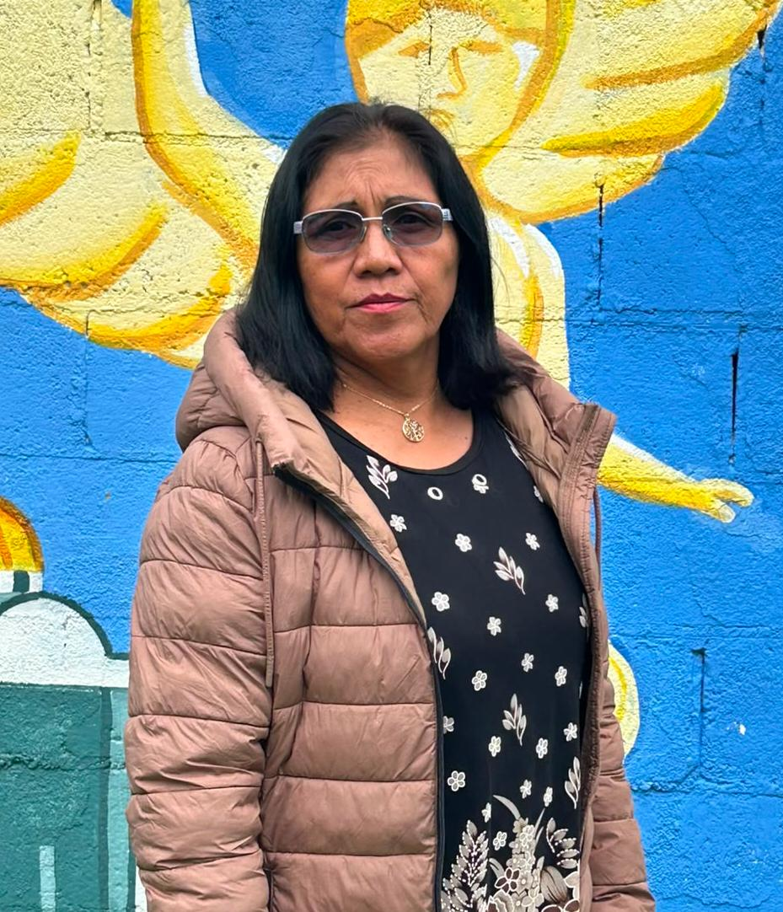
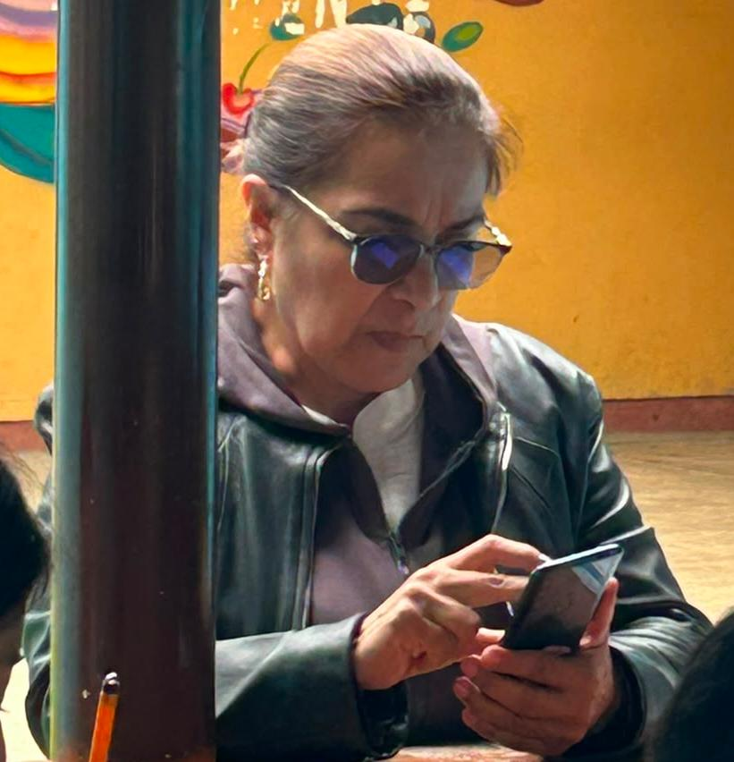
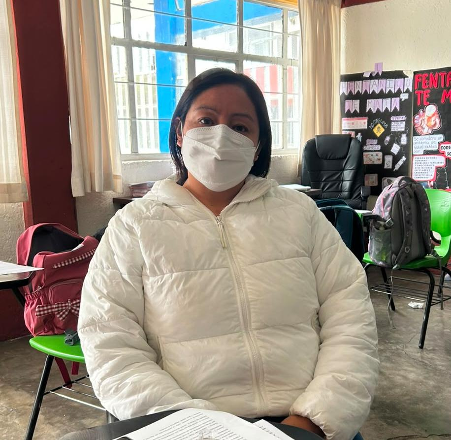
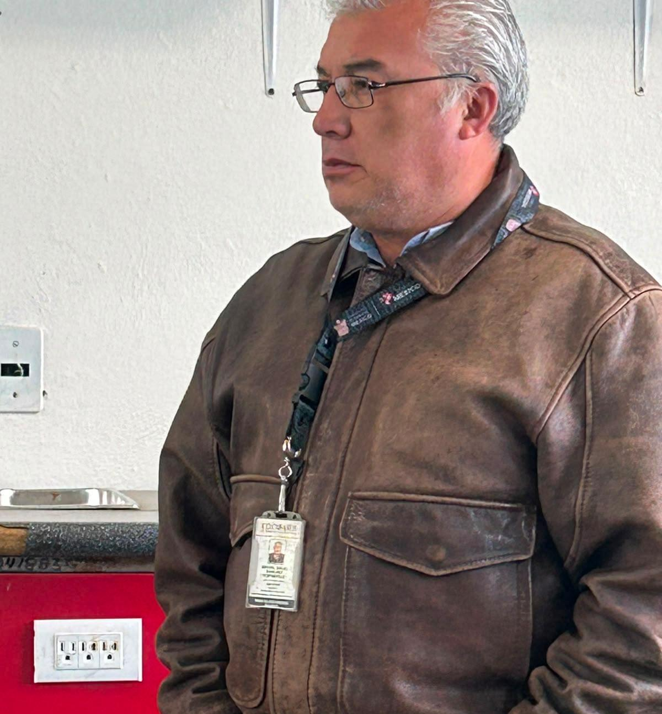
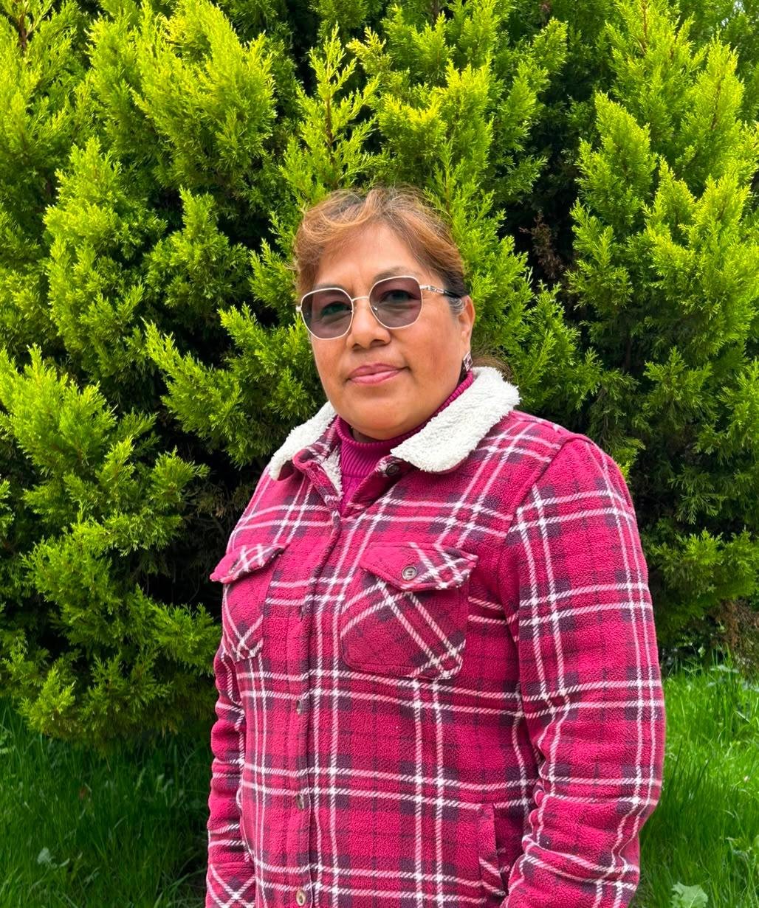
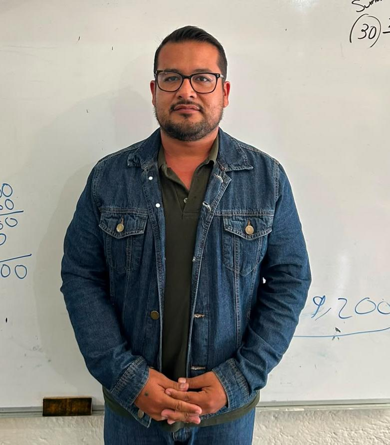

La plantilla docente de la OFTV No. 0103 "Juan Aldama" está integrada por un directivo escolar y ocho docentes frente a grupo comprometidos con la formación académica y humana de los estudiantes.
El personal cuenta con una sólida preparación profesional, incluyendo estudios de Doctorado, Maestría y Licenciaturas en diversas áreas educativas, fortaleciendo la calidad del servicio educativo que se brinda a la comunidad.
La institución también cuenta con el apoyo de una secretaria administrativa y dos personas encargadas de los servicios de conserjería, quienes contribuyen al buen funcionamiento de la escuela.
Entre los docentes prevalece un ambiente de colaboración, trabajo en equipo y compromiso institucional, favoreciendo la permanencia del personal y la mejora continua de los procesos educativos.
Después de la pandemia, el personal docente ha fortalecido las estrategias de enseñanza para atender el rezago educativo, especialmente en lectura, escritura y razonamiento lógico matemático.
Las actividades del Consejo Técnico Escolar constituyen un espacio de reflexión, análisis y mejora continua. Durante estas reuniones los docentes presentan evidencias de trabajo, comparten estrategias pedagógicas exitosas y proponen acciones para fortalecer los aprendizajes de los estudiantes.
Asimismo, se analizan situaciones relacionadas con la disciplina escolar, el aprovechamiento académico y la convivencia, favoreciendo la construcción de acuerdos que impactan positivamente en el ambiente educativo.
La Telesecundaria ha logrado transformar el Consejo Técnico Escolar en un espacio dinámico y reflexivo que favorece el desarrollo profesional continuo del equipo docente. A través de la presentación de evidencias pedagógicas, el intercambio de experiencias y las asesorías especializadas, los docentes tienen la oportunidad de actualizarse constantemente en su práctica educativa y de mejorar su desempeño con el fin de optimizar el aprendizaje y el bienestar de los estudiantes.
Después de aplicar instrumentos de seguimiento al personal docente, se identificaron áreas de oportunidad en los distintos campos formativos. Estas observaciones permiten diseñar estrategias para fortalecer el aprendizaje y mejorar los resultados académicos de los estudiantes.
Se detectaron dificultades en comprensión lectora, producción de textos y argumentación oral. Algunos estudiantes presentan problemas para expresar ideas con claridad, defender opiniones y utilizar adecuadamente diversas modalidades de lectura y escritura.
Se observaron dificultades en cálculo mental, operaciones matemáticas, ecuaciones de segundo grado y uso de herramientas como el Teorema de Pitágoras y razones trigonométricas.
Los estudiantes presentan dificultades para comprender procesos históricos, interpretar información geográfica y analizar las relaciones entre sociedad y naturaleza.
Se identifican retos relacionados con el desarrollo socioemocional, la innovación pedagógica, la comunicación con familias y el fortalecimiento de estrategias didácticas.

Director Escolar

Docente de Apoyo Académico y Administrativo

Docente frente a grupo

Docente frente a grupo

Docente frente a grupo

Docente frente a grupo

Docente frente a grupo

Docente frente a grupo

Docente frente a grupo
La OFTV No. 0103 "Juan Aldama" centra su labor educativa en el aprendizaje de los estudiantes, implementando estrategias pedagógicas adaptadas a las necesidades individuales, al contexto rural de la comunidad y a los diferentes estilos de aprendizaje.
Los docentes diseñan actividades considerando estrategias visuales, auditivas y kinestésicas para atender la diversidad de estilos de aprendizaje y favorecer una educación más significativa.
Se realizan acompañamientos individuales para identificar fortalezas y áreas de oportunidad de cada estudiante, brindando apoyo específico para mejorar su desempeño académico y personal.
La asignación de responsabilidades y comisiones se realiza considerando las capacidades y especialidades de cada docente, fortaleciendo la organización institucional y el trabajo en equipo.
Los docentes participan en cursos, talleres y espacios de actualización profesional que fortalecen sus competencias pedagógicas y favorecen la innovación educativa.
La telesecundaria ha implementado diversas estrategias para optimizar los procesos administrativos, reducir la carga burocrática y permitir que los docentes dediquen más tiempo al fortalecimiento de los aprendizajes de los estudiantes.
Se organizan cronogramas de trabajo que permiten distribuir responsabilidades y actividades de manera planificada durante todo el ciclo escolar, evitando acumulación de tareas y mejorando la organización institucional.
Cada docente participa en comisiones específicas relacionadas con actividades académicas, administrativas, culturales y sociales, favoreciendo una distribución equitativa de responsabilidades.
Durante los Consejos Técnicos Escolares se comparten proyectos, avances y propuestas de mejora, fortaleciendo la colaboración entre docentes y optimizando la coordinación institucional.
La organización eficiente de tareas y recursos permite agilizar trámites internos, reducir actividades repetitivas y mejorar la toma de decisiones dentro de la institución.
La distribución organizada de responsabilidades, el trabajo colaborativo y la planeación anticipada permiten que la comunidad escolar mantenga procesos administrativos ágiles y eficientes, favoreciendo un entorno de trabajo más ordenado y enfocado en la mejora continua de los aprendizajes.